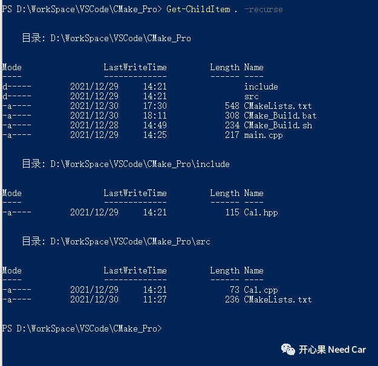
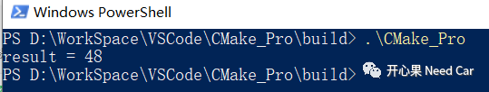

前面CMake的讨论基于Linux系统，因为CMake可以跨平台使用，因此本文聊聊在Windows下如何使用。
CMake在Windows下的安装
CMake的Windows版本或者其它版本可以在官网下载，下载链接：
https://cmake.org/download/
在Windows下需要安装mingw，下载链接：
https://sourceforge.net/projects/mingw-w64/
Windows下使用CMake所需软件及配置，具体可以参考链接：
https://www.cnblogs.com/herelsp/p/8679200.html

Windows下的CMake过程

01
CMake_Build.bat
@echo offset buildDir=build@REM build的文件夹不存在则创建if not exist %buildDir% md %buildDir%if exist %buildDir% cd %buildDir%echo "***************:Execute cmake ***************"cmake -G"Unix Makefiles" ../echo "***************:Execute make ***************"makepause
PS D:\WorkSpace\VSCode\CMake_Pro> .\CMake_Build.bat"***************:Execute cmake ***************"-- The C compiler identification is GNU 8.1.0-- The CXX compiler identification is GNU 8.1.0-- Detecting C compiler ABI info-- Detecting C compiler ABI info - done-- Check for working C compiler: D:/App/Work/Mingw64/mingw64/bin/gcc.exe - skipped-- Detecting C compile features-- Detecting C compile features - done-- Detecting CXX compiler ABI info-- Detecting CXX compiler ABI info - done-- Check for working CXX compiler: D:/App/Work/Mingw64/mingw64/bin/c++.exe - skipped-- Detecting CXX compile features-- Detecting CXX compile features - done-- myEnvVar: 80-- Configuring done-- Generating done-- Build files have been written to: D:/WorkSpace/VSCode/CMake_Pro/build"***************:Execute make ***************"[] Building CXX object src/CMakeFiles/Cal.dir/Cal.cpp.obj[] Linking CXX static library libCal.a[] Built target Cal[] Building CXX object CMakeFiles/CMake_Pro.dir/main.cpp.obj[] Linking CXX executable CMake_Pro.exe[] Built target CMake_Pro请按任意键继续. . .PS D:\WorkSpace\VSCode\CMake_Pro>

往期精彩推荐：

Vector代码这样过滤CanID Range，你Get到没？